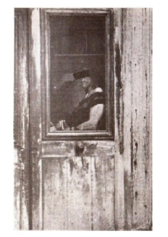
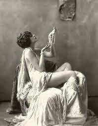

Ένας από τους μύθους που κατατρέχει τη σημερινή Θεσσαλονίκη είναι αυτός της «ερωτικής πόλης» Πρόκειται για μια πεποίθηση-ταμπού, που οι ρίζες της χάνονται στα βάθη των αιώνων.
Η κοσμοπολίτικη Θεσσαλονίκη, με την πανσπερμία των φυλών της, τις πανέμορφες φορεσιές των γυναικών, τις περίφημες πιάτσες και τα ονομαστά μπορντέλα της, ασκούσε πάντοτε μιαν ακαταμάχητη γοητεία στους κατοίκους της επαρχίας, που κατέφευγαν συχνά σ’ αυτήν για να γευτούν τις απαγορευμένες ηδονές της.
Δεν είναι παράξενο λοιπόν, που με την πάροδο του χρόνου, η Θεσσαλονίκη απέκτησε τη φήμη της «ερωτικής πόλης» με φαλλικό μάλιστα σύμβολο της τον… Λευκό Πύργο!
Στα τέλη του 19ου αιώνα η περιοχή του αγοραίου έρωτα της Θεσσαλονίκης άρχισε να εντοπίζεται στα δυτικά της πόλης και κοντά στο λιμάνι. Οι αφιερωμένες στη θεά του έρωτα περιοχές του Βαρδαρίου, όπως τα πολυτραγουδισμένα Λαδάδικα και η θρυλική Μπάρα, βρίσκονταν πάντα κοντά στο λιμάνι και στις δυτικές πύλες της Θεσσαλονίκης, για να εξυπηρετούν καλύτερα τους εισερχόμενους στην πόλη ταξιδιώτες. Στα «Σπίτια» του Κανάλ ντ’ Αμούρ έβρισκαν ως πρόσφατα καταφύγιο οι κουρασμένοι ταξιδιώτες, οι φαντάροι, οι ναυτικοί, οι έμποροι, οι βαριεστημένοι σύζυγοι και κάθε κατηγορίας εκπρόσωποι του αρσενικού φύλου. Με πρόσωπα φτιασιδωμένα από επιστρώματα φτηνών καλλυντικών, οι ιέρειες του έρωτα, γυμνές και με τα πόδια προκλητικά ανοιγμένα, καλούσαν τους βιαστικούς περαστικούς να γευτούν τον «αγοραίο έρωτα».
Η χρυσή εποχή της θρυλικής Μπάρας (από το Ισπανοεβραιϊκό Μπάριο) ή συνοικία των Ελών ήταν το 1916-1918, όταν η κοσμοπολίτικη Στρατιά της Ανατολής, που αριθμούσε 300.000 άνδρες, του Στρατηγού Σαράϊγ αποβιβάστηκε στην Θεσσαλονίκη.
Με την παρουσία της τεράστιας στρατιάς του Σαράιγ η Θεσσαλονίκη μεταβλήθηκε σε μια κοσμοπολίτικη μυρμηγκοφωλιά: στο ήδη υπάρχον εθνολογικό μείγμα των κατοίκων της (Εβραίοι, Έλληνες, Τούρκοι, Σλάβοι, Αρβανίτες, Βλάχοι, Φραγκολεβαντίνοι κ.α.) προστέθηκε και το ετερόκλητο συνοθύλευμα του συμμαχικού εκστρατευτικού σώματος.
Οι Γάλλοι μετέφεραν εκεί Αλγερινούς, Μαροκάνους, Σενεγαλέζους, μαύρους από το Σουδάν καθώς επίσης και κρεόλους από την Καραϊβική. Οι Άγγλοι αποβίβασαν στην πόλη και Σκωτσέζους, Αυστραλούς, Νεοζηλανδούς αλλά και διάφορες φυλές της Ινδίας. Υπήρχαν επίσης Ιταλοί και Ρώσοι στρατιώτες, ενώ τέλος προστέθηκαν οι πολυπληθείς Σέρβοι και Μαυροβούνιοι.
Σε καμιά άλλη ευρωπαϊκή πόλη δεν είχαν συγκεντρωθεί έως τότε τόσες πολλές και διαφορετικές φυλές –μια πραγματική Βαβέλ εθνοτήτων, γλωσσών, θρησκειών και συνομωσιών! Η φανταχτερή Θεσσαλονίκη ζούσε εκείνη την εποχή ανεπανάληπτες στιγμές.
Μαζί με τη Στρατιά της Ανατολής κατέφθασαν και καραβάνια από πόρνες, κάθε χρώματος, φυλής και γλώσσας που, μαζί με το ντόπιο δυναμικό, ανέλαβαν να ικανοποιήσουν τις σεξουαλικές ορμές της τεράστιας στρατιάς του Σαράιγ. Στην ακμή της η «συνοικία του αίσχους» είχε πάνω από 2.000 πόρνες!
Στη διάρκεια του Α’ Παγκοσμίου Πολέμου η Μπάρα ήταν η μεγαλύτερη συνοικία με «κόκκινα φώτα» στην Ευρώπη. Ειδικά τη νύχτα ήταν μια πολυσύχναστη περιοχή. Για τους νεαρούς στρατιώτες η Μπάρα ήταν ο αγαπημένος τους τόπος για διασκέδαση και απόλαυση. Στη διάρκεια του πολέμου οι στρατιώτες ήταν οι περισσότεροι πελάτες της Μπάρας. Γι’ αυτό και ξένοι στρατιωτικοί γιατροί επισκέπτονταν συχνά τις πόρνες για να εξετάσουν την κατάσταση της υγείας τους, ώστε να προστατεύσουν τους στρατιώτες τους από αφροδίσια νοσήματα και ιδιαίτερα από τη σύφιλη, τη μάστιγα εκείνης της εποχής.
Ορισμένα «σπίτια» είχαν μια απλή και σχεδόν οικογενειακή ατμόσφαιρα, ενώ οι πόρνες προέρχονταν απ’ όλα τα μέρη της Ελλάδας και της Κύπρου, ανάμεσά τους και αρκετές ντόπιες Θεσσαλονικιές (Ελληνίδες, Εβραίες και Μουσουλμάνες). Μετά το τέλος του Α’ Παγκοσμίου Πολέμου παρέμειναν στη Μπάρα γύρω στις 1.000 πόρνες, που εξυπηρετούσαν στα μικρά δωματιάκια τους φαντάρους, εμπόρους αλλά και αγρότες της Μακεδονίας. Όμως ο αριθμός τους έφθινε σταδιακά.
Στη οδό Αφροδίτης, τα πορνεία-καμαρούλες ήταν κοντά το ένα στο άλλο. Σχεδόν όλα μονοόροφα.
Εκεί, οι περισσότερες πόρνες είχαν και το νοικοκυριό τους.
Κάποια καμαράκια είχαν επιπλέον μια μικρή κουζίνα, ή ένα ακόμη μικρό δωμάτιο. Στην πόρτα του κάθε «ατομικού» πορνείου καθόταν η μία και μοναδική εργάτρια του σ3ξ. Όταν η κοπέλα είχε πελάτη, τραβούσε την πόρτα. Θραύση έκαναν Ουγγαρέζες και Πολωνές πόρνες. Υψηλού επιπέδου ήταν επίσης οι Σμυρνιές και οι Βολιώτισσες.
Υπήρχαν όμως και κανονικά σπίτια στην Μπάρα. Ανάμεσα στις οικείες του πληρωμένου έρωτα, ζούσαν και οικογένειες. Για την αποφυγή παρεξηγήσεων με ξαναμμένους εραστές, η επιγραφή στην πόρτα ήταν σαφής. «Προσοχή οικογένεια». Στον δρόμο αυτό, η πράξη δεν κόστιζε ακριβά. Το ίδιο και στη Βάκχου, ή την Οδυσσέως.
Σχεδόν τα μισά λεφτά, από ότι πλήρωναν στα δύο πολυόροφα «σπίτια» της οδού Ειρήνης. Εκεί, για να καταλήξουν στο κρεβάτι κάποια κοπέλας που νοίκιαζε δωμάτιο, περνούσαν πρώτα από τη διευθύντρια του οίκου! Παρών, φυσικά, στο χώρο και ο μπράβος. Την περιθωριακή περιοχή πλαισίωναν καφενέδες, ταβερνάκια και τεκέδες.
Ο ΣΟΥΡΕΑΛΙΣΤΙΚΟΣ ΚΟΣΜΟΣ ΤΗΣ ΜΠΑΡΑΣ
Το «γκέτο» της Μπάρας, ήταν ένας σουρεαλιστικός κόσμος φουκαράδων, τυχοδιωκτών και αγοραίου έρωτα, που λειτουργούσε με τους δικούς του κανόνες. Πολλοί συγγραφείς, που επισκέπτονταν τότε τη Θεσσαλονίκη, περιέγραφαν τη «γοητεία» και την «παραδοσιακή ερωτική αίσθηση της Ανατολής», που απέπνεε η πόλη και ιδιαίτερα η Μπάρα.
Η ρωσική επανάσταση τον Οκτώβριο του 1917 καθώς και η Μικρασιατική καταστροφή έφεραν στην πόλη καταδιωγμένους Ρώσους αριστοκράτες και εξαθλιωμένους Μικρασιάτες πρόσφυγες. Ανάμεσα τους υπήρχαν και πολλά «απροστάτευτα και ορφανά κορίτσια», που η οικονομική ανάγκη τα καθιστούσε ευάλωτα και τα ωθούσε προς την πορνεία.
Οι πουτάνες ή πόρνες (στα τούρκικα ονομάζονταν και «μικρές κυρίες» ή χανουμάκια) ζούσαν κάτω από τη βία των νταβατζήδων τους και των πελατών τους. Κάποιες από αυτές τις «κοινές γυναίκες» κατέληγαν το πρωί μεθυσμένες, ημίγυμνες, με μαυρισμένα μάτια και με το αίμα να κυλά από τη μύτη και τα δόντια τους, αφού το προηγούμενο βράδυ είχαν υποστεί κακοποίηση από θυμωμένους και μεθυσμένους πελάτες. Σε μερικά ανωτέρου επιπέδου «σπίτια» η Πατρόνα ή «Μαμά» κανόνιζε τις τιμές και διαπραγματεύονταν το «εμπόρευμα» της. Συχνά μάλιστα έστελνε και κοπέλες σε ιδιωτικές επισκέψεις σε σπίτια αριστοκρατών.
Πολλές ήταν οι «Μαντάμ» της εποχής που η φήμη τους απλώθηκε σε όλη την πόλη, όπως η Μαντάμ Κλεοπάτρα, η Μαντάμ Ζιζέλ (Εβραία) και η Μαντάμ Δεδέ. Η τελευταία, που ήταν και νονά του παιδιού του αρχηγού της αστυνομίας Νίκου Μουσχουντή, διατηρούσε το μπορντέλο της στην οδό Αγγελάκη, σχεδόν αποκλειστικά με κορίτσια-πρόσφυγες από τη Μικρά Ασία.
Η ίδια διατηρούσε ένα δίκτυο πληροφοριοδοτών κι έτσι πολύ γρήγορα μια πληροφορία για νέα πρόσωπα του υποκόσμου έφθανε στις Αρχές. Ήταν γνωστές άλλωστε οι σχέσεις μεταξύ των επικεφαλής της αστυνομίας της Θεσσαλονίκης και του υποκόσμου. Φρόντιζε ακόμα τα κορίτσια της να έχουν όλα άδεια!
Ο ΑΡΧΙΝΤΑΗΔΕΣ ΚΑΙ ΜΑΧΑΙΡΟΒΓΑΛΤΕΣ
Από τις θρυλικές μορφές της Μπάρας εκείνης της εποχής ξεχωρίζει ο «ντυμένος πάντα στην τρίχα» Άλκης Πετσάς, ο επονομαζόμενος και «Βασιλιάς της Μπάρας». Ο Πετσάς, ο αρχινταής του Βαρδάρη, ήταν ο αρχηγός μιας συμμορίας, αποτελούμενη από νταήδες και μαχαιροβγάλτες, με προέλευση την Κωνσταντινούπολη και παραρτήματα σε Σμύρνη και Κρήτη.
Σύμφωνα με τον αείμνηστο θεσσαλονικιό συγγραφέα Μάριο Μαρίνο Χαραλάμπους (1937-2007): «Ο Άλκης Πετσάς ήταν τότε ο αναμφισβήτητος βασιλιάς του μικρόκοσμου και του υπόκοσμου της Θεσσαλονίκης. Των χασισέμπορων, των χασισοποτών, των νταβατζήδων, των μπουρδέλων, των μιζαδόρων, των χαρτοπαικτικών λεσχών. Είχε επιβληθεί με την παλικαριά του, το μυαλό του και την καλοσύνη του. Όλα εξαρτιόταν απ’ αυτόν. Ήταν ο αφέντης της περιοχής» (Η Χρυσή Πύλη της Δύσης, εκδ. Άγνωστο).
Ο Άλκης Πετσάς γεννήθηκε στο Βόλο, αλλά μεγάλωσε στην Κωνσταντινούπολη, στη συνοικία Ταταύλα. Εκεί μπήκε στον κόσμο του χασίς και της σωματεμπορίας. Όταν ήρθε στη Θεσσαλονίκη επιβλήθηκε γρήγορα στο μικρόκοσμο της Μπάρας. Κάθε σύγκρουση μαζί του έβγαινε καταστροφική για τους αντιπάλους του. Δεν άργησε έτσι να εξελιχθεί στον «βασιλιά της Μπάρας».
Το στέκι και ορμητήριο του ήταν ένα καφενείο-χασισοποτείο στη Μπάρα, στην οδό Αφροδίτης 51, απέναντι από το μπορντέλο της Μαντάμ Ερασμίας. Ήταν ένα μικρό μαγαζί με καναπέδες στον τοίχο, λίγα τραπεζάκια, καρέκλες κι ένα μιντέρι για να ξαπλώνει.
Σε γενικές γραμμές ο Άλκης Πέτσας είχε καλή φήμη στον υπόκοσμο της Θεσσαλονίκης. Θεωρούνταν άτομο «με μπέσα», αδιάφθορος, που βοηθούσε τους φτωχούς: Ο Πετσάς ήταν ο εγγυητής της ασφάλειας στη Μπάρα και κρατούσε την εγκληματικότητα σε χαμηλά επίπεδα. Ωστόσο μέρα με τη μέρα μεγάλωνε ο αριθμός των δυσαρεστημένων, που ήθελαν να τον ξεφορτωθούν.
Το 1932 έφθασαν στην Μπάρα δύο νταήδες από την Αθήνα, Σμυρνιοί στην καταγωγή. Ήταν δύο αδέρφια, οι Αυγουλάδες, ο Παράσχος και ο Χατζής. Αυτοί ήρθαν σε επαφή με δυσαρεστημένους Σμυρνιούς της Θεσσαλονίκης κι άρχισαν να οργανώνουν δικές τους λέσχες, εκβιασμούς και πορνεία.
Σύντομα ο υπόκοσμος της πόλης χωρίστηκε σε δύο στρατόπεδα: στους «Κωνσταντινοπολίτες» του Άλκη Πετσά και στους «Σμυρνιούς» των Αυγουλάδων. Οι μεταξύ τους συγκρούσεις άρχισαν να πυκνώνουν. Ένα βράδυ το πρωτοπαλίκαρο του Άλκης, ο Κέρκυρας, πυροβόλησε και τραυμάτισε τον μεγάλο αδελφό Αυγουλά. Αυτός ορκίστηκε εκδίκηση.
Οι Αυγουλάδες παρακολουθούσαν τις κινήσεις του Άλκη για να βρουν ευκαιρία να τον κτυπήσουν. Η ευκαιρία δόθηκε ένα βράδυ στο μαγαζί του στην οδό Αφροδίτης 51. Οι Αυγουλάδες, προφασιζόμενοι ότι ήθελαν να του μιλήσουν, τον πυροβόλησαν πολλές φορές με δύο πιστόλια και μετά άρχισαν να τον μαχαιρώνουν. «Μπαμπέσηδες!», ήταν η μόνη λέξη που πρόλαβε να ξεστομίσει. Ζούσε ακόμη όταν τον πήγαν στο νοσοκομείο.
Είχε φάει επτά σφαίρες και 11 μαχαιριές. Στην κηδεία του, που έγινε την επόμενη μέρα, παραβρέθηκαν όλοι οι ντάηδες της Σαλονίκης, ενώ όλα τα «σπίτια» και όλες οι χαρτοπαικτικές λέσχες της Μπάρας παρέμειναν την ίδια μέρα κλειστά ως ένδειξη πένθους.
«ΑΓΑΠΗΤΙΚΟΙ» ΚΑΙ ΣΩΜΑΤΕΜΠΟΡΟΙ
Η πορνεία ήταν σημαντικό κομμάτι της οικονομίας της Θεσσαλονίκης του Μεσοπολέμου. To 1928 υπήρχαν τουλάχιστον 48 πορνεία με επίσημη άδεια, ενώ υπήρχαν και δεκάδες άλλα «σπίτια» που λειτουργούσαν παράνομα. Αλλά ήδη η καθωσπρέπει αστική κοινωνία της πόλης θεωρούσε καθήκον της την εξάλειψη του «αποστήματος» της Μπάρας.
Αφορμή για τις εκστρατείες «εξυγίανσης» της πόλης και εξουδετέρωσης της αμαρτωλής Μπάρας, υπήρξαν και διάφορα περιστατικά ορισμένων καλών και σεμνών κοριτσιών που εξωθήθηκαν από τους «αγαπητικούς» τους στην πορνεία.
Είναι η γνωστή από τις εφημερίδες της εποχής η περίπτωση της Χρυσούλας Τ., που διατηρούσε «ερωτικές σχέσεις» με τον Παναγιώτη Πιερίδη, επειδή εκείνος της υποσχέθηκε ότι θα την παντρευτεί. Όμως η Χρυσούλα δεν στάθηκε τυχερή. Σύντομα βρέθηκε ξαπλωμένη σε κρεβάτι όχι στο νέο της σπίτι, όπως της είχε υποσχεθεί, αλλά στο μπορντέλο μιας παλιάς φίλης και συνεταίρου του Πιερίδη, της Αγγέλας Μαχαιρά, γνωστής και ως «Το Μαχαίρι».
Η Χρυσούλα κατάλαβε τότε ότι ο «καλός» της την προόριζε για πόρνη, το έσκασε και κατήγγειλε το περιστατικό στην αστυνομία. Όπως έμαθε στη συνέχεια δεν ήταν η πρώτη φορά που συνέβαινε κάτι τέτοιο και ότι το σύστημα αυτό απέδιδε και εφοδίαζε τα μπορντέλα της πόλης με «φρέσκο κρέας».
Το 1934 η συντηρητική εφημερίδα Μακεδονία επιδόθηκε σε μια ηθικολογική αρθρογραφία σχετικά με την «εξυγίανση» της πόλης από την «άσεμνη και καταραμένη» πορνεία, λέγοντας πως «άλλες πόλεις κατάφεραν ήδη να καθαρίσουν από αυτή την κατάρα».
Η ΠΑΡΑΚΜΗ ΤΗΣ «ΕΡΩΤΙΚΗΣ ΘΕΣΣΑΛΟΝΙΚΗΣ»
Την περίοδο του Β’ Παγκόσμιου Πόλεμου ο νέος αρχινταής της Μπάρας ήταν ο Κέρκυρας, το αλλοτινό πρωτοπαλίκαρο του Άλκη Πετσά. Αυτός την περίοδο της Κατοχής έγινε Ταγματασφαλίτης και συνεργάτης των Γερμανών. Άνοιξε μάλιστα και μπουζουκτσίδικο για τους μαυραγορίτρες –οι μόνοι που είχαν τότε λεφτά και καλοπερνούσαν–, όπου έπαιξε και ο Τσιτσάνης.
Μετά τον Β’ Παγκόσμιο Πόλεμο, το Υπουργείο Δημόσιας Τάξης, η Εκκλησία, αλλά και ο νεοσύστατος ΟΗΕ, ζήτησαν και επεδίωξαν να κλείσει η Μπάρα –η «ντροπή της Θεσσαλονίκης». Έξω από την Μπάρα τα περισσότερα μπορντέλα έκλεισαν το 1949, εκτός από ορισμένα που παρέμειναν ανοικτά για να εξυπηρετούν τις σεξουαλικές ανάγκες των στρατιωτών και των επισκεπτών της πόλης.
Το 1951 τα περισσότερα σπίτια μέσα στη Μπάρα κατέβασαν τις πόρτες τους και ορισμένα από αυτά μετακόμισαν κοντά στην περιοχή του νέου σιδηροδρομικού σταθμού.
Παρά τις διώξεις των αρχών η πορνεία στη Θεσσαλονίκη συνέχιζε να υπάρχει underground και, όταν κάποιο αμερικανικό πολεμικό σκάφος προσέγγιζε το λιμάνι της όπως έγινε το 1952, «ξαφνικά» η παραλία και το κέντρο της πόλης γέμιζαν από γυναίκες «αμφιβόλου και υπόπτου ηθικής». Μέχρι τα μέσα της δεκαετίας του 1950 πάνω από εκατό «άσεμνες γυναίκες», σχεδόν όλες τους Ελληνίδες, ασχολούνταν επαγγελματικά με την πορνεία.
Η περιοχή γύρω από την πλατεία Βαρδαρίου συνέχισε να εμπνέει τους ποιητές και συγγραφείς της πόλης, που συνέβαλαν με τα γραπτά τους στη φήμη της Θεσσαλονίκης ως «ερωτικής πόλης».
Βέβαια μετά τον Β’ Παγκόσμιο Πόλεμο οι συγγραφείς είχαν την τάση να βλέπουν το ζήτημα ρομαντικά και να υμνούν την προπολεμική Μπάρα, παραβλέποντας το γεγονός πως η άνθηση της πορνείας στην περίοδο του Μεσοπολέμου ήταν αποτέλεσμα της μεγάλης κοινωνικής κρίσης που προκάλεσε στην πόλη η Μικρασιατική Καταστροφή.
Σήμερα ωστόσο, όλες αυτές οι περιοχές δεν είναι παρά μια χλωμή σκιά του ένδοξου εαυτού τους των πρώτων δεκαετιών του 20ου αιώνα. Στις μέρες μας στις οδούς Βάκχου, Αφροδίτης, Οδυσσέως κ.α. τα «κόκκινα φωτάκια» σπανίζουν και οι επισκέπτες ολοένα και λιγοστεύουν –αν και τελευταία η ροή έχει κάπως αυξηθεί εξαιτίας των ανδρών μεταναστών που θέλουν να ικανοποιήσουν τις σεξουαλικές τους ορέξεις.
Λίγους δρόμους πιο πέρα τα ονομαστά Λαδάδικα «αναβαθμίστηκαν» και μετατράπηκαν σε στέκια ενός αντισηπτικού τρόπου διασκέδασης της νεολαίας. Κι η θρυλική Μπάρα, βυθισμένη στο απόκοσμο μεγαλείο της παρακμής της ζει τους έσχατους καιρούς της. Άλλη μια παραδοσιακή γειτονιά, σήμα κατατεθέν της ερωτικής Θεσσαλονίκης, αργοσβήνει και ίσως κάποια στιγμή «αναβαθμιστεί» και αυτή και γίνει άλλη μια αντισηπτική ατραξιόν για ξεστρατισμένους τουρίστες.